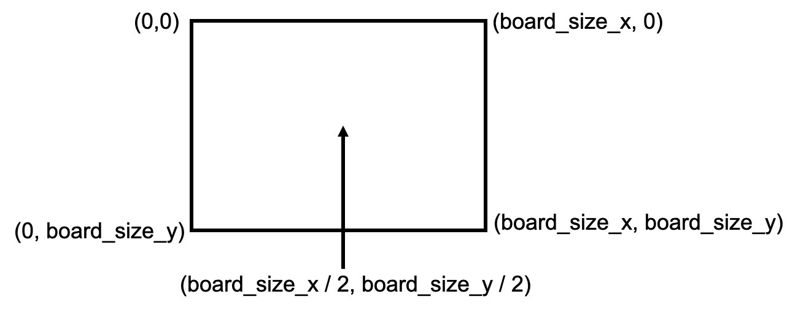
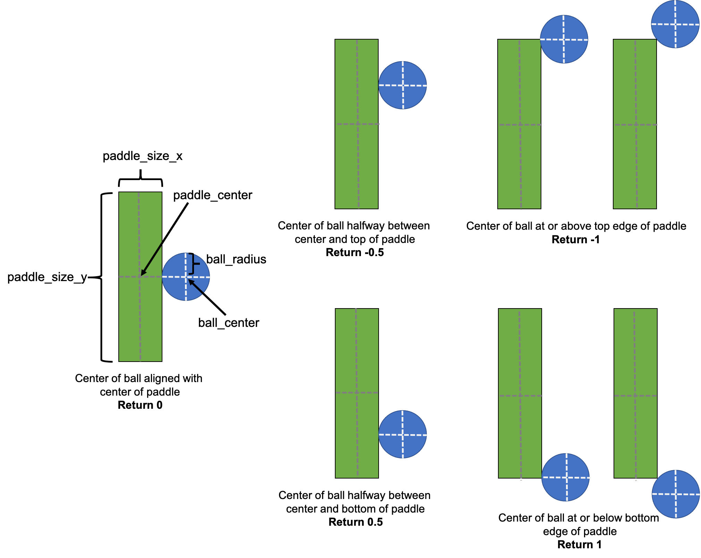

The due date for this homework is Friday, October 23, 5:00pm EDT.
This homework will improve your skills with functions and the doctest module. Specifically, this assignment is designed to give you practice with the following topics:
doctest module to write unit testsAs usual, we encourage you to start early.
To get started, download hw6.zip and unzip the compressed file to reveal the following files:
hw6_geometry.py: This file will be used for Part 1hw6_ai.py: This file will be used for Part 2pong.py: A Python module that implements a version of the classic video game Pong. You will not need to modify this file.graphics.py: A Python module that pong.py uses to create and draw the Pong game animation. You will not need to modify this file.hw6tester.py: A Python program for running tests on your implementationshw6.pdf: This fileNote that hw6_geometry.py and hw6_ai.py have special headers at the top including form fields that you should fill out before submitting your assignment. Also, do not change the file names as the test program included with this homework (and test programs that we use) assume certain file names.
Pong is a classic 2D video game originally released in 1972 by Atari. It was among the first commercially successful video games and is often considered to have launched the video game industry.
Pong is similar to games like air hockey, in which two players (or one player and an AI) each control a paddle on opposite sides of the board. The the players attempt to use a paddle to bounce a ball past the opposing player’s paddle.
In this assignment, you will first program some of the essential geometry calculations needed to implement Pong. You will then program the behavior of an AI pong player, so you can play Pong against your AI.
Pong is effectively a game of geometry. Your first task is to complete two functions in hw6_geometry.py. These functions will then be imported and used by pong.py to implement a version of Pong. These functions should have the exact definitions and behaviors described below. You will also need to write unit tests for these functions using the doctests module. You may look up any geometry formulas you need on the Internet.
A Pong board is a rectangular space with every location in the space defined by Euclidean coordinates. The upper left corner of the board is coordinate (0,0). The lower right corner of the board is coordinate (board_size_x, board_size_y). See the image below for the coordinates at each corner and the center of the board.

check_wall_collision(ball_center_x, ball_center_y, ball_radius, board_size_x, board_size_y)
This function should take the center (ball_center_x, ball_center_y) and radius (ball_radius) of a circular Pong ball and the size of the board. The function can assume that all arguments are nonnegative integers. The function should return the following:
The string "left" if the ball is touching or overlapping the left edge of the board
The string "right" if the ball is touching or overlapping the right edge of the board
The string "top" if the ball is touching or overlapping the top edge of the board
The string "bottom" if the ball is touching or overlapping the bottom edge of the board
The value None if none of the above are true
You should also write at least 5 doctests for this function to test the five cases above. The pattern for adding a new doctest is to add two lines in the docstring. The first line shows how the function would be called in the interactive interpreter, including >>> at the beginning of the line. The second (immediately following) has the return value of the function without the >>> prefix. See the doctests documentation for more examples: https://docs.python.org/3/library/doctest.html.
check_paddle_collision(ball_center_x, ball_center_y, ball_radius, paddle_center_x, paddle_center_y, paddle_size_x, paddle_size_y)
In addition to wall collisions, a Pong implementation must be able to detect when the ball collides with either of the two paddles. This function takes the center (ball_center_x, ball_center_y) and radius (ball_radius) of a circular Pong ball, the center (paddle_center_x, paddle_center_y) of a single rectangular paddle, and the width and height of the paddle in the x and y dimensions (paddle_size_x and paddle_size_y). The function can assume that all arguments are nonnegative integers. The function should calculate and return the following:
The value None if the ball is not touching or overlapping the paddle
A float in [-1, 1] if the ball is touching or overlapping the paddle. The value returned should be based on the relative y-positions of the center of the ball and the center of the paddle. 0 if the center of the paddle and the ball are aligned. 1 if the center of the ball is at (or past) the bottom edge of the paddle. -1 if the center of the ball is at (or past) the top edge of the paddle. The fraction of the distance of the ball from the center of the paddle to the edge of the paddle otherwise. See the image below for examples
You should also write at least 5 doctests to test relevant cases for this function.

Tip: Draw a board, ball, and paddles on a sheet of scrap paper instead of trying to work out what conditionals you need to check in your head.
Once you have finished these functions and doctests, you should be able to run pong.py. You can use the up and down arrow keys to control the paddle on the right side of the board. The angle and velocity that the ball deflects off the paddles depends on the results of the check_paddle_collision() function.
Here are example outputs of these functions:
>>> check_wall_collision(400, 595, 5, 700, 600)
'bottom'>>> check_paddle_collision(20, 425, 10, 5, 400, 10, 100)
0.5Now that you have geometry working, it’s time to program an AI pong player!
You will do this by completing two functions in hw6_ai.py. These functions are given the following information by pong.py as arguments:
paddle_center_y: The y-coordinate of the center of the AI’s paddle
paddle_size_y: The size of the AI’s paddle in the y dimension.
ball_center_y: The y coordinate of the center of the ball
opponent_y: The y coordinate of the center of the human player’s paddle
board_size_y: The size of the board in the y dimension
These functions must return one of the following values:
The string "up" if the paddle should move upward given the current locations of the paddle and the ball
The string "down" if the paddle should move downward given the current locations of the paddle and the ball
The value None if the paddle should remain stationary
First, complete the beginner_pong_ai() function. This function should attempt to keep the center of the ball within the middle 50% of the paddle at all times. Remember that higher values of y correspond to positions lower on the Pong board. Note that the opponent_y and board_size_y arguments aren’t needed in this function.
Next, complete the intermediate_pong_ai() function. This function should try to beat its opponent by bouncing the ball away from its opponent. If the center of the opponent’s paddle is in the top half of the board, the AI should move to try to keep the center of the ball in the bottom half of its paddle (thus hitting the ball downwards). If the center of the opponent’s paddle is in the bottom half of the board, the AI should move to try to keep the ball in the top half of its paddle (thus hitting the ball upwards).
Finally, write at least 3 doctests for each of these two functions.
To play against these AIs yourself, open pong.py and update the AI_player variable at the beginning of the file to either AI_player = beginner_pong_ai or AI_player = intermediate_pong_ai. Then run pong.py.
Here is an example output of beginner_pong_ai():
>>> beginner_pong_ai(400, 10, 79, 0, 0)
'up'Challenge problems are entirely optional extensions to the homework. If you complete them successfully, you are rewarded with a sense of accomplishment and a small number of extra points on the homework. They are intended for students who want to explore a little further; only pursue the challenge problem after you have successfully completed the homework.
For this week, the challenge problem is to complete the additional function expert_pong_ai() in hw6_ai.py to create a more challenging AI pong player that is more effective at hitting the ball away from the human player’s paddle.
As with the other homeworks, we are providing a program that you can use to test that your homework is meeting the basic specifications of the assignment.
Please note:
To use the test program, follow these steps:
Find the test program that is inside the zip file for this homework. The file name is hw6tester.py. Make sure that this file is in exactly the same folder as the homework files for this assignment.
Make sure your homework files are named exactly as described in assignment.
Open hw6tester.py in IDLE.
In IDLE, select Run -> Run module
Read the test messages that are printed and revise your work accordingly. If the output of your program does not precisely match the expected output, a test will fail.
We hope you find this helpful!
Submit your completed assignment on Moodle under your course section’s homework 6. You should upload the following files:
hw6_geometry.pyhw6_ai.pyRemember to complete the questions at the top of the provided files and that the files you submit need to have these exact filenames.
Your assignment will be graded on two criteria:
Correctness: this document contains details for how you must complete each letter, including examples. Be sure that you run your program once for each example and make sure it works correctly for each one. Be sure to test each program to verify that it works for other inputs, too — you can be sure that we will do that! [90%]
The correctness part of your grade is broken down as follows:
| Category | Portion of grade |
|---|---|
| Part 1 (geometry) | 40% |
| Part 2 (AI) | 40% |
Program design and style [20%]: style and program design become increasingly important the more complex your program becomes. For these programs, adhere to the following guidelines:
Variable names should be meaningful
Programs should contain at least a few descriptive comments. Do not comment every line of code with low level explanations of what each line does. Focus on high level ideas.
The fish and space needle text art must have separate functions created to draw each separate feature of these pictures.
All functions must have docstrings with give a brief description of what they do.